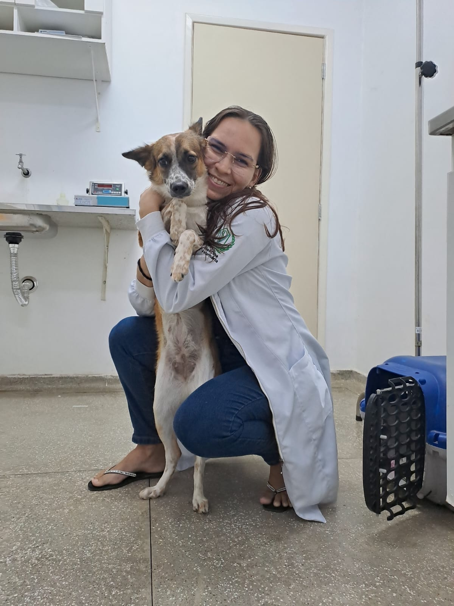
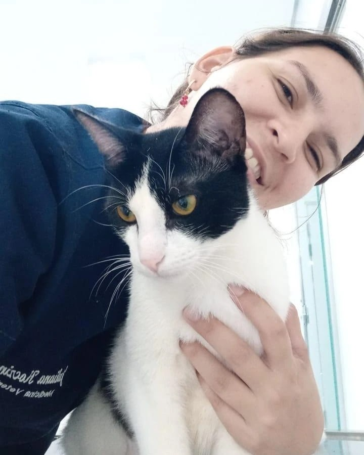
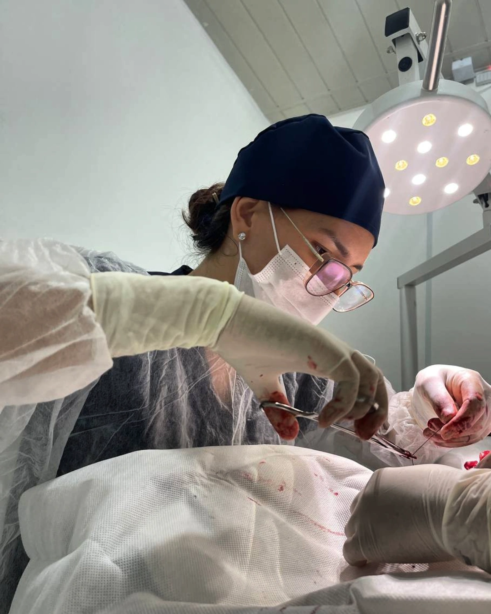

Juliana Koczinski
Médica Veterinária
Atendimento veterinário com carinho, atenção e profissionalismo para garantir a saúde e qualidade do seu melhor amigo.

Atendimento realizado no conforto da sua casa.
Vacinas essenciais para a saúde do pet.
Cuidados temporários para seu pet.

Agende consultas, vacinas e serviços de forma simples e segura.
Sou Juliana Koczinski, médica veterinária formada e apaixonada por cuidar de vidas.

"Meu gato é bastante arisco, mas foi atendido com muito cuidado e respeito. Fiquei muito satisfeita com o atendimento."
"A aplicação das vacinas foi realizada em casa, com muita praticidade e tranquilidade para meu pet."
"Atendimento excelente! Recebi todas as orientações necessárias e meu pet foi muito bem cuidado."
📞 95 99999-9999
✉️ medvet@email.com
📍 Boa Vista - RR